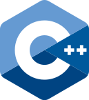
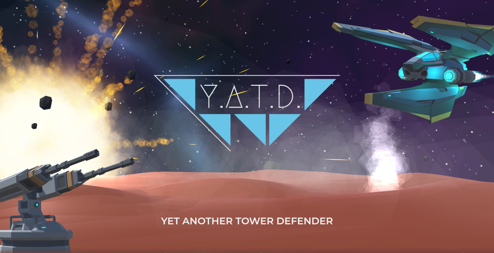
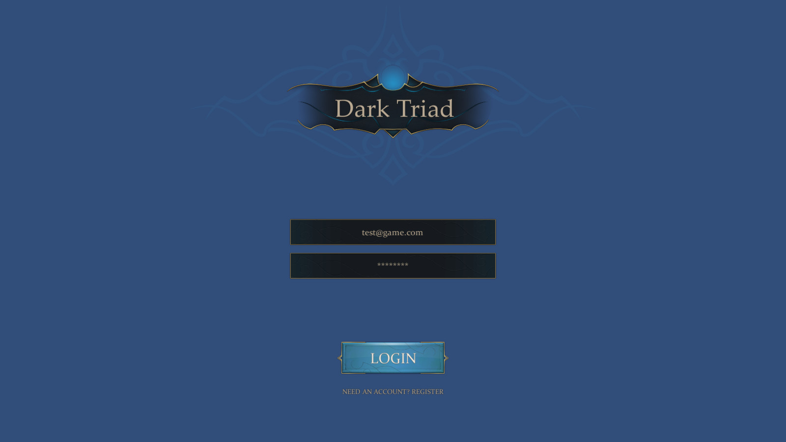
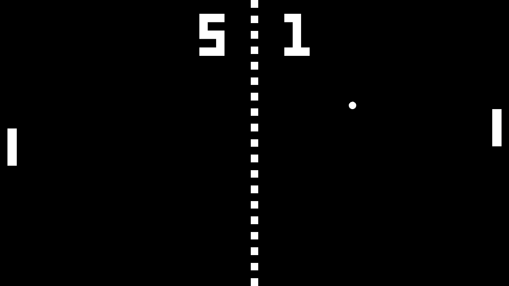
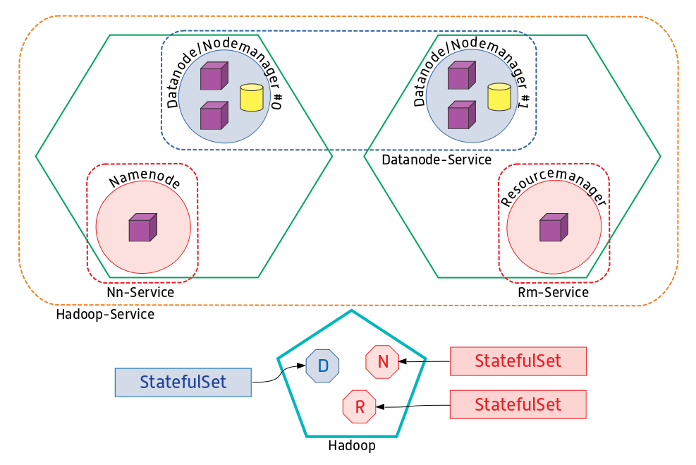

3 years of experience
Advanced
Professionally used for creating embedded and progressive web-front-ends to be used in car-infotainment-systems.

C++
4 years of experience
Advanced
Experience in modern concepts of the C++ 20 standard and STL combined with the CMake build tool.
Used professionally und privately for most of my general work.
Java
6 years of experience
Advanced
Experienced in Java 11 and many facetts of programming were learned and executed with Java.
Professionally used for REST based back-ends and microservices.
Web technologies
In-depth, professional knowledge of modern and efficient web technologies like React and Svelte as well as
security concepts.
Game development
Fundamental game development and engine experience from passionate hobby projects.
Networking
Hands on experience in developing large REST based microservice architectures and huge interest in
multiplayer game networking.
Currently I'm working on my first bigger 3D game Y.A.T.D...
It is a tower defense game and serves as a playground to discover 3D game development and try out new web
development technologies.
Rust is still on the table and I'm trying to wrap my head around it. My first attempt to write something
meaningful failed due to my (seemingly) little understanding of this language. Hopefully I can then move on
from C++ for good. But my goal to write a 2D terminal graphics engine in Rust isn't out of my sight!
I think this was enough of programming stuff.
For me as a person, I love to play computer games, go mountain biking and meet up with my friends.
Formerly I lived in Bitburg, a small town in the Eifel. For my informatics studies I temporarily moved to
Trier.
Now I'm living in Düsseldorf and work here as a software developer.
I'm interested in languages (aside from programming languages). Besides English, I tried to learn japanese
and currently vietnamese. I enjoy spending time on research for physics, space and nature.
Recently I obtained my boating licence and I hope that the summer will hold some refreshing holidays at sea.
And in general, I love to start little projects in very different disciplines like voice acting, game development,
drawing, even crafting things out of wood and of course tuning my bike to take on heavier trails! Like anything
that comes to my mind. My favourite animals are ducks and tortoises.
Contact Me
I promise, you won't regret it.
Y.A.T.D.
Yet Another Tower Defender - [W.I.P.]

A new revolutionary tower defender game based on Unity3D like any other. But better!
Currently, the website is the main part of the project. Because advertising is key!
Website
It is developed using Svelte and Typescript.
The site highlights the key features of the game and dynamically provides the latest news through a
news-backend based on Express.js. It additionally features a phpBB Forum dedicated to this game.
While still under construction, the website should provide a way to download the future game and
adhere to all legal regulations regarding privacy, etc.
Game
Developed in Unity3D and C# it serves as a simpler and more concise game to get more and more into game
development (as opposed to my last project Dark Triad).
Campaign: Play a campaign with dozens of exciting scenarios. The further you progress through the campaign the harder the challenges will get!
Try and find the perfect moves to beat the incoming armies that want to destroy your nexus. Set your personal best times and compete against others on a global leaderboard.
Endless Mode: No story, no limitations, just pure tower defense!
If you really want to push your boundaries you can set your own scenario and go as long as you can last.
With personal best times and global leaderboards to open the competition!
Mazing: You can position your turrets where you want! Employ your own building style with turret mazes for the incoming enemies.
Only the resources are your limits! Don't let the armies go straight to your nexus. Maze them through a jungle of walls, turrets and mines to keep them from your base as long as possible!
Map Editor & Sharing Platform: Tired of the standard campaign maps? Just create your own and share it with others!
Or download some awesome custom maps from other players on the game internal sharing platform.
Date: September 2022
Category: Game development, Web development
Programming Language: C#, Typescript
Framework: Unity3D, Svelte, Express.js
Dark Triad
3D-MORPG - [On hold]

Dark Triad is a currently developed 3D-MORPG (Multiplayer Online Role-Playing Game).
It is heavily inspired by the 2D-MORPG "Realm of the Mad God" and should give a similar gameplay experience.
The game is developed in the Unity3D engine and greatly relies on the Synthy Studios assets.
Currently it supports different users creating their account via the website using the Auth0 service.
Inside of the game, they can log in with their accout, fetch and/or create their characters which are stored in
cloud hosted REST services written in C++ using the fast Drogon webframework and ProstgreSQL.
After selecting a character the player will spawn in the starting city and is able to move around in a "Realm of the Mad God"-esque
manner and can also see other players.
The networking is implemented using their new "Netcode for Gameobjects" framework.
The source code is hosted on Github and at least the REST services are built and tested in the Github Actions pipeline
and automatically deployed to the cloud platform heroku as a Docker container.
All presented points are functional but also a bit rough around the edges.
Future plans revolve around the Deployment/hosting on Kubenetes with Agones, CI/CD for the Unity build, Combat system,
Enemies / NPCs, and an internal chat system.
This project serves as a playground to learn many facets of multiplayer game development.
Date: May 2021
Category: Game development, networking, web development
Programming Language: C++, C#, Typescript
Framework: Unity3D, Drogon, React
Pong with A.I.
Neural Network learns to play Pong

In this project I developed the classical arcade game Pong and integrated a self learning A.I. based
on a
artificial neural network. The game comes with different pre-learned A.I.s and two other live-learning
A.I. modes.
Date: February 2019
Category: A.I.
Programming Language: C++
Framework: OpenNN, SFML, SFMLApp
Clear Up Robot
Robot Behaviour that clears up objects
This behaviour for an AMR (automated mobile robot) will operate in a specific area (known via a map)
and perform
clear up tasks for specific objects. You simply hold a coloured object in front of the robot's camera
and it starts
moving to the clear up area. It will then search for colour matching objects and pick them up with its
2-DOF gripper.
It then moves towards a deploy area where it stores the obtained objects and then attempts to search
for other objects.
This project was made with a classmate at my university's robotics lab.
Date: December 2018 - January 2019
Category: Robotics
Programming Language: C++
Framework: Aria, ACTS
Robot: Pioneer 2-DX
Big Data meets Container
Containerized Hadoop Cluster

Big Data technologies like Hadoop or Cassandra are designed to run on multiple servers as a cluster.
These cluster nodes
can be seperately containerized with Docker to provide a platform independet operation. These
containers can be deployed and
orchestrated throughout a whole set of servers in a Kubernetes cluster. Servers can be dynamically
added and removed
without the risk of data loss. That makes the handling of huge server clusters much more convenient
and modular.
This project was made collaboratively with a classmate at my university as a team project.
Date: April - July 2018
Category: Big Data, Containerization
Programming Language: Bash, Dockerfile, YAML
Framework: Docker, Kubernetes
Personal Voice Assistant
Privacy compliant personal voice assisant
The goal of a voice assisant is to help the user with daily tasks via the vocal communication channel.
But to understand natural language, typically a neural network has to be trained with tremendous amounts of data.
This data is gathered by bigger corporations from their very own customers.
Even in situations the customers thought were private to them.
This Personal Voice Assistant is trying to challenge this practice by only using conciously donated voice data
to train its neural network. Futher it operates completely offline, so no private voice data will ever be leaked somewhere else.
Mozilla Common Voice is a project where everybody can donate some spoken language to an open source voice corpus.
This corpus and some custom voice lines were used during this project for speech recognition and together with the
speech regognition library Mozilla DeepSpeech it is the backbone of the assistant.
Further the assistant operates with an own implementation of a skill system, which was inspired by the Google Assistant.
A skill is basically a conversation topic. If a topic (e.g. a skill) is active, the conversation is treated in this specific context.
So the assisant is able to respond with a certain degree of context in mind.
Technically this project is heavily multithreaded to ensure no interruptions between speech regognition, conversation processing and the actual auditive responding.
This project was done as my bachelor thesis.